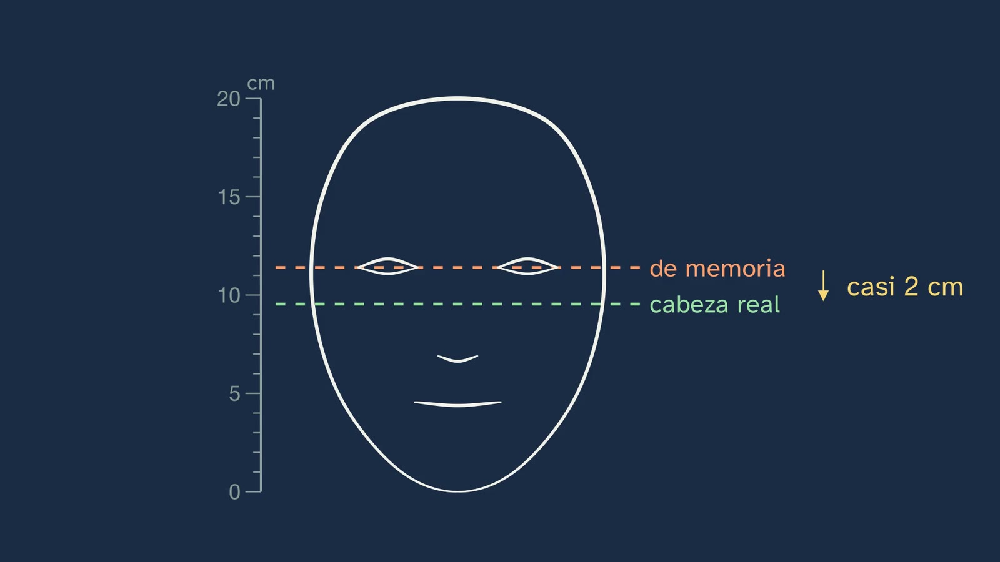
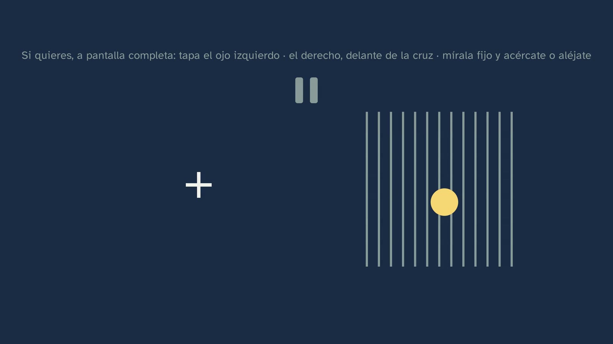
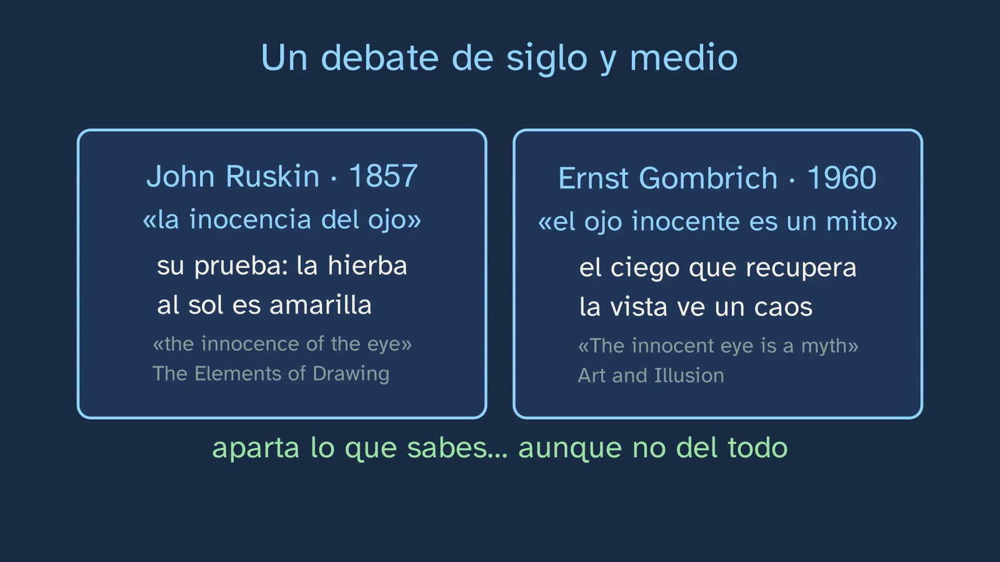
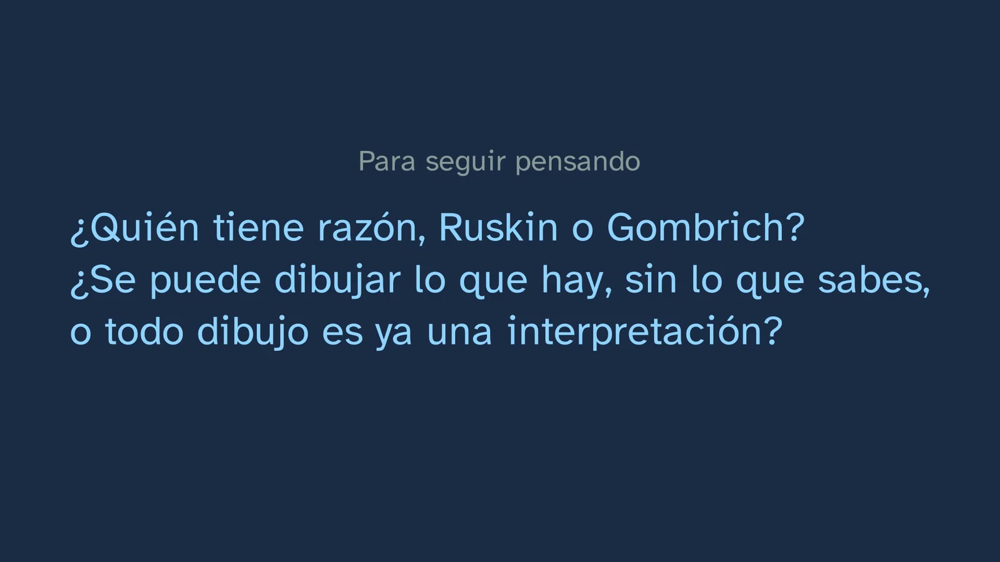
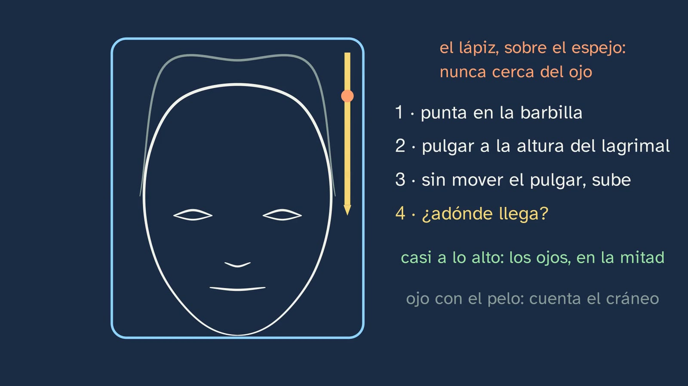
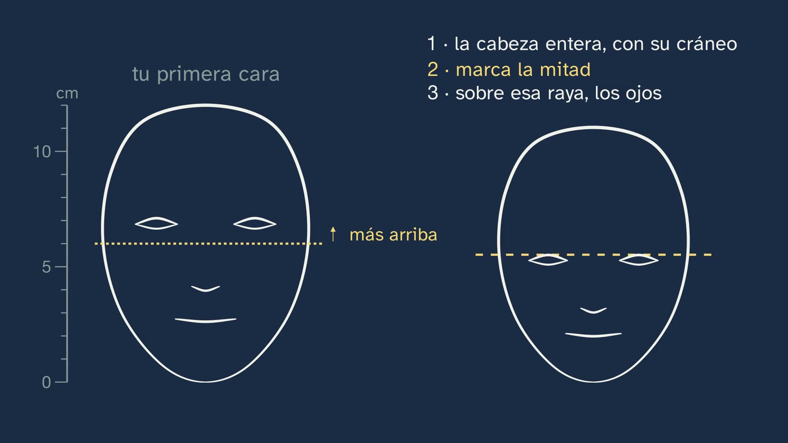
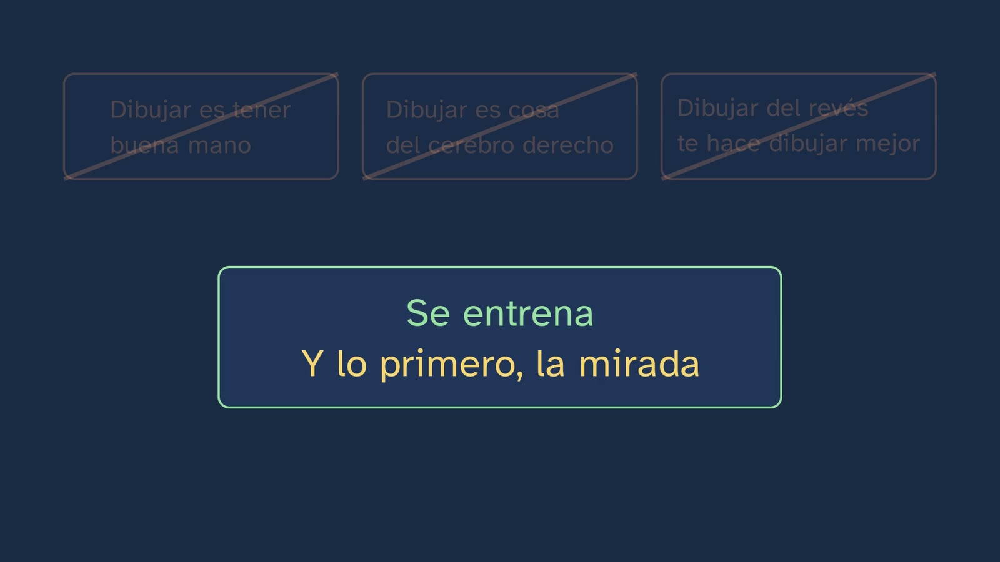

Why does almost nobody draw what they see?
In a nutshell
This is the channel's first Artistic Drawing class, and it opens the topic "Learning to look". Its message fits in one line: almost everything that goes wrong when we draw lies not in the hand but in the eye, because the brain does not give us only the light that reaches the eye, but a reconstruction mixed with what it knows about things. And the eye can be trained, and checked by measuring.
Before explaining anything, Marina suggests an experiment: if they want to, students pause the video and draw a face from memory, in ten seconds, inside a rectangle. That drawing is kept: it is the topic's initial assessment, and it comes back twice, in this class and at the end of topic 2. The hook is a bet: in 2014, Claus-Christian Carbon and Benedikt Wirth, from the University of Bamberg, published four studies with 206 people who drew a face, from memory or by copying it. From memory, on average, they put the eyes at 57% of the height of the head, counting from the chin; in an adult head they are, on average, at 47.7%. In a 20 cm head, almost 2 cm of difference. When the eye line is lowered, the forehead we swallow up appears: the explanation that best fits their data, and it is stated as a hypothesis, is that we draw the head like a box.
Then, why the brain adds so much of its own. What reaches the eye is not the apple, but the light that bounces off it, and it forms a small, upside-down image on the retina. That image has a gap, the blind spot (Mariotte, 1668), which students check on their own screen, and some shadows, those of the retina's blood vessels, which we normally don't see. Does the brain paint in what's missing, or does it simply not miss it? It is left as an open debate, with its two positions. Competence 8 of the decree puts it in a strong sentence, "What is perceived is nothing more than the brain's reconstruction of the information received": the class separates what has been tested (the brain builds what you see) from what is philosophy (the "nothing more than").
The mechanism of the error is shape constancy. In 1931, the psychologist Robert Thouless put a cardboard circle on a table: what reached his observer's eye was an ellipse 36 high for every 100 wide, and the observer drew it at 58. The same person copied a flat ellipse seen from the front exactly. It is a single observer, so it is a demonstration; what is solid is that, out of 129 people, artists included, not one escaped it. That is why people who draw don't trust their eye alone: they check, by measuring. The class teaches the first measurement: studies of real heads place the eyes between 47 and 52% of the height; students check it in their reflection, with the pencil resting on the mirror; and go back to their first drawing to place the eyes in three steps: the whole head, halfway, the eyes on that line.
Then it answers the title: the hand or the eye? The tracing comes out well and the copy doesn't, even though the hand makes the same strokes; what fails is what the eye decides (Cohen and Bennett, 1997, in a paper whose title was almost the same as this class's; and a 2016 review). Three very widespread ideas fall: "drawing means having a good hand", "drawing is a right-brain thing" (a neuromyth as an explanation) and "drawing upside down makes you draw better" (two studies with more than a hundred people each: it doesn't improve, and the distance from the eyes to the mouth comes out worse). The last part turns the coin over: if looking can be learned, drawing is a school for looking, and the curriculum calls it a "form of knowledge"; drawing also helps you remember. It closes with the debate between Ruskin (1857), who called for recovering "the innocence of the eye", and Gombrich (1960), for whom the innocent eye is a myth, each with his best argument. It is left as an open question.
Objective. By the end, students will know why, when drawing from memory, almost all of us put the eyes too high, what research says about why we fail when we draw (the eye, not the hand), and how to place the eyes of a head where they belong by measuring.
For readers outside Spain: the Bachillerato is the last two years of secondary school (ages 16–18); it follows ESO, the four years of compulsory secondary education (ages 12–16). Artistic Drawing I is a compulsory subject in the first year of the Arts strand of the Bachillerato. The BOE is Spain's Official State Gazette, where every law and decree is published. Spain is divided into seventeen autonomous communities (regions), plus the autonomous cities of Ceuta and Melilla; each completes the national curriculum with its own, and this sheet mentions several of them. The video is in Spanish, with English subtitles; the images on this sheet come from the video and keep their Spanish text. Spanish documents (the decrees and the regional curricula) are quoted in our translation; English sources are quoted in the original. Decimals are written here with a point (47.7%), not with the Spanish comma.
Curriculum
Spain's Royal Decree 243/2022, annex II, Artistic Drawing, a compulsory subject in the first year of Bachillerato in the Visual Arts, Image and Design pathway. Quotations checked on 15/10/2026 in the BOE's consolidated text (its latest update, of 02/07/2026, does not touch annex II) and, for the page numbers, in the original PDF (BOE no. 82, of 6 April 2022), consulted on 16/10/2026. Our translation of the official Spanish text.
| Element | What the decree says | Where the class works on it |
|---|---|---|
| Core knowledge (block A, "Concept and history of drawing") | "Drawing as an interactive process of observation, reflection, imagination, representation and communication." (p. 46127) | The whole class is about observing and reflecting before representing. The chapter "Drawing is knowing what you look at" says so explicitly (11:36–13:13) |
| Core knowledge (block C, "Perception and the ordering of space") | "Foundations of visual perception." (p. 46128) | Light, the retina and the blind spot (3:06–5:19), and shape and size constancy (6:16–7:41). Gestalt and optical illusions, from the same block, go to topic 5 |
| Specific competence 1 | "To understand drawing as a form of knowledge, communication and expression…" (p. 46122) | "Drawing is knowing what you look at": to draw something you have to really look at it (11:42) |
| Specific competence 6, description | "Drawing starts from the precise and active observation of reality, which is why it is essential to understand how the visual perception we start from works, its laws and principles…" (p. 46124) | It is the reason why the first class is about perception: what we know bends what we see |
| Specific competence 8, description | "What is perceived is nothing more than the brain's reconstruction of the information received, and visual memory plays a fundamental part in that reconstruction…" (p. 46125) | Quoted on screen and discussed (5:28–5:50): tested, that the brain builds what you see; philosophy, the "nothing more than". Visual memory, in class 5 |
| Criterion 1.1 | "To identify drawing as a form of knowledge, communication and expression, reflecting with initiative on its presence in different cultural and artistic manifestations…" (p. 46126) | Drawing as a way of knowing and the Ruskin–Gombrich debate (11:52–13:13); the open question |
| Criterion 6.1 | "To use the mechanisms of visual perception, its laws and principles, with communicative or expressive intentions…" (p. 46127) | The constancies, as a mechanism you need to know so as not to fall into it (Thouless's plate), and measuring as a way of correcting it |
What it deliberately does not cover. The core knowledge item "The sketch or rough. Introduction to blocking in" (block B) and criteria 8.1 and 8.2 belong to classes 2 to 5. The three-step recipe for the eyes is a first contact with measuring, not blocking in: blocking in is learned in class 2, "Measuring with your pencil".
What students need to bring. From ESO (Royal Decree 217/2022, Visual and Audiovisual Arts Education, block B): "Visual perception. Introduction to perceptual principles, elements and factors." and "Composition. Concepts of balance, proportion and rhythm applied to the organisation of shapes on the plane and in space." (BOE no. 76, of 30 March 2022, p. 41646). The class retrieves it with a question, "do we see with our eyes or with our brain?" (2:51). What they don't bring is the theory of how the eye sees, or a method for measuring. From ESO Mathematics, percentages and proportion: 47.7% and 57% are turned into centimetres on a 20 cm head.
The hours. In the seven autonomous communities compared (Andalusia, Catalonia, Madrid, the Valencian Community, Galicia, Castile and León and the Basque Country) it is four hours a week in the first year; in the Basque Country, three as a minimum and four as a reference. It is a workshop subject with a lot of practice time: the video provides the way of looking, the method and the evidence, and classroom time is left for drawing.
The textbooks. There is no Artistic Drawing I textbook in a LOMLOE edition (the current education law; Spain's ISBN database, consulted on 15/10/2026). The only one on sale is McGraw-Hill's from 2006 (LOE, the previous law), which opens with materials and continues with perception. Of 27 school book lists reviewed, only two ask for it. It is only for contrast: nothing on this sheet comes from it.
For Castile and León. Its decree asks for an initial assessment before each task: the face from memory at the beginning is one, and that is why it is kept without a mark.
[!info] A note for Catalonia and the Basque Country In these two communities the human figure belongs to the second year. Catalonia says so in the introduction to the subject: «A més el segon curs introdueix el dibuix de la figura humana» ("In addition, the second year introduces drawing the human figure"; Decree 171/2022, DOGC 8758, p. 100), and its criterion 4.2 for the first year removes the human body from the national criterion (p. 103). The Basque Country does the same in its criterion 4.2 for the first year (Decree 76/2023, BOPV 109, p. 165). In this class the face is not studied as a human figure: it is the example of a perception error and of the first measurement. Blocking in the head, the hand and the body in topic 2 will be a preview for them. And a point in favour in Catalonia: it is the only curriculum that links perception to neurology («de la neurologia», p. 109), which is exactly what this class does.
How the class is built
Video chapters
About fifteen minutes, in nine chapters. It is a theory class, at Marina's desk, with a lot to do at home: each idea is checked with something students can repeat (their own drawing, the screen, a mirror, a plate, a tracing). It follows the department's model: look, measure and draw. It is the first of the topic's five classes; the next, "Measuring with your pencil", is already a workshop.
| Chapter | What happens | Why this way |
|---|---|---|
| What we'll see | Marina introduces herself. The topic map, with its five classes and the pencil on the workshop ones, and the materials: a couple of pencils (an ordinary one and a soft one), an eraser and some sheets of paper (0:27). | The map, in every class. The materials are said once, for the whole topic. |
| The face you draw | The experiment, suggested: "if you want to, pause the video and draw a face, from memory, inside a rectangle", in about ten seconds (0:39). It is kept for topic 2 (0:53). "I haven't seen your drawing, but I think I know where you've put the eyes" (1:03). | Producing before seeing: students become a data point in the experiment that follows. It is how Carbon and Wirth begin their paper. |
| The eyes, too high | Carbon and Wirth, 2014: 206 people in four studies (1:07). The bet: above, at halfway or below? (1:29, pause). Above: the 20 cm ruler, 9.5 cm in a real head and 11.4 cm from memory, almost 2 cm (1:40). When the line is lowered, the forehead appears (2:04). The error doesn't disappear completely even when copying; the box hypothesis, as a hypothesis: "We don't draw the head we see. We draw the one we think it is" (2:15). | The topic's strongest data (a huge effect, which is repeated with 106 people), turned into centimetres. The animation reveals what the percentage hides: we swallow up the forehead. |
| What reaches the eye | Retrieval from ESO: do we see with our eyes or with our brain? (2:51, pause). Light, the retina and the upside-down image (3:06). The blind spot and Mariotte (3:22). The test, if they want to, with the video paused (3:56) and what is seen: no gap (4:22). The debate: does it fill it in or ignore it? (4:44). The decree's sentence, separated from what has been tested (5:28). For living, a marvel; for drawing, a trap (5:49). | It is the underlying why: there is a gap and some shadows that we never see, so the brain adds a lot. Each claim is tested with the students' own eyes, and the two places where there is a debate are presented as a debate (article 9). The last sentence fixes what "what they see" means in the title. |
| What you know bends what you see | The plate: as flattened, or rounder? (6:26, pause). Thouless, 1931: 36 versus 58 (6:36). The flat ellipse, copied exactly, and the 129 people (6:54). Size constancy and "not even artists escape them: that's why people measure" (7:20). Marina, halfway through: "you don't draw what you see, you draw what you know. And the eye can be trained" (7:41). | The mechanism of the error, with its control: the same hand that rounds the plate copies the ellipse well. It leads straight to class 2. |
| How do we know? Measure it yourself | The studies of heads: from 47 to 52% (7:54). The measurement in the reflection, with the pencil resting on the mirror and never close to the eye (8:16). Back to the first drawing and the three steps (8:49). | The channel's question. Three tests students can do, and the procedure the objective asks for: placing the eyes by measuring. |
| The hand or the eye? | Tracing or copying: which will come out better? (9:33, pause). The tracing; the four steps of drawing, and what fails is what the eye decides (Cohen and Bennett, 1997; the 2016 review) (9:40). Three false ideas: the good hand (10:31), the right brain (10:38) and drawing upside down (11:04). What we do know: it can be trained (11:21). | It answers the title by reasoning with an experiment students can do at home. Small studies are not used as evidence (a channel rule): Cohen and Bennett are given without figures. |
| Drawing is knowing what you look at | If looking can be learned, drawing is a school for looking (11:38). Drawing as a form of knowledge (competence 1); drawing helps you remember; seeing comes naturally, looking is learned (11:52). Ruskin and Gombrich, each with his best argument (12:24). | The other side of the class, and the well-founded reflection the subject asks for. The debate is presented in full and left open. |
| Practice | Three exercises (13:13): the plate and its photo, the tracing explained and another face with the eyes at halfway. The open question (13:42). The next class, the first workshop (14:02). Marina says goodbye (14:09). | Practice that tests the idea of the day with a measurement. The solutions open class 2. |
Bridges with other subjects. Biology, Geology and Environmental Sciences: the eye, the retina and the optic nerve. Mathematics: percentages and proportions (47.7% of 20 cm), and measuring with the pencil, which in class 2 is a problem of similar triangles. Physics and Chemistry: light that bounces and the inverted image, as in a camera. Philosophy: do we see the world as it is? The debate between direct realism and perception as construction, and the one between Ruskin and Gombrich.

A plan for a 50-minute lesson
Designed for watching in class with a projector, with sheets of paper and a pencil on the desk. If the video is watched at home, as a flipped class, the whole session can be devoted to the activity and to the "other option".
| Minutes | What is done |
|---|---|
| 0–2 | No video. Paper and pencils on the desks. Nothing else: students are not told what the class is about. |
| 2–8 | Video from the beginning up to "What reaches the eye" (0:00–2:40). Stop at (0:51): each student draws their face from memory in ten seconds, inside a rectangle, and keeps it face down. Stop at (1:37), the bet: by show of hands, above, at halfway or below. |
| 8–17 | Video up to Marina's appearance halfway through (2:40–7:49). Stop at (4:20), the blind spot: whoever wants to tries it (see "Questions and solutions"; with a projector the distance is large, so the printed board image or the student's own phone works better). Stop at (6:32), the plate: by show of hands. |
| 17–23 | Video to the end of "How do we know? Measure it yourself" (7:49–9:17). Stop at (8:59): each student measures their first face with the table on the worksheet (three minutes). The measurement in the mirror, for home. |
| 23–29 | Video to the end (9:17–14:17). Stop at (9:37), tracing or copying: one reason per pair. The exercises, for home. |
| 29–48 | The activity: "The face from memory, measured together". |
| 48–50 | The open question, for the video's comments or for the next class. |
Typical mistakes and how they are handled
With the usual warning: none of them has been measured with Spanish Bachillerato students. They are the ones the topic sheet anticipated, the ones the script review pointed out and the ones that circulate in books and on the internet.
- "Drawing well means having a good hand", or "you're either born with talent or you're not". If the tracing comes out well and the copy doesn't, the hand is not the main problem. Cohen and Bennett (1997) sum it up like this: "motor coordination is a very minimal source of drawing inaccuracies" (abstract, p. 609). The review by Chamberlain and Wagemans (2016) puts perceiving the model and one's own drawing accurately at the centre: "accurate perception of the subject and of the drawing is at the heart of drawing proficiency" (abstract). What is better not said is the opposite, "nobody is born knowing how to draw", because the literature cites children who draw like adults without lessons (Chamberlain et al., 2019, citing Drake and Winner, 2012). The class says what holds up: "it's a skill you train, like playing an instrument" (11:21). And honestly about how much: the only study that followed students over a school year (42 art students, five months, with no control group) saw a small improvement, from 3.48 to 3.82 out of 7 (Chamberlain et al., 2019). Improvement is measured in months and years.
- The eyes, too high. It is the thread of the class: from memory, at 57% (study 1, 41 people) and at 56.5% (study 3, 106 people, male and female faces), against 47.7% for Farkas's norm (Carbon and Wirth, 2014, tables 1 and 2). The effect is huge (d ≈ 1.3). Two cautions so as not to go too far the other way. One: halfway is an average and almost nobody meets it exactly; in 200 Turkish adults, only 8% of women and 4% of men met the exact canon (Karaca Saygili et al., 2016, table 3). Two: in young children the eyes fall below halfway, because the skull grows before the face (see "Notes"). And a measuring error: counting up to the top of the hair. The class warns about it: "count up to where the skull would be, not the hairstyle" (8:44).
- "Drawing is a right-hemisphere thing." It was popularised by Drawing on the Right Side of the Brain, by Betty Edwards (1979). As an explanation it is a neuromyth. The OECD lists it among the neuromyths: "the hemispheres of the brain do not work separately but together for all cognitive tasks" (2007, ch. 6, p. 117), and a study of 1,011 people aged 7 to 29 found no "left-brained" or "right-brained" people (Nielsen et al., 2013). Edwards herself hedges: in 2012 she calls her modes "R-mode" and "L-mode" "to avoid the so-called location controversy". The class says that some of its exercises may be useful, "but not for that reason" (10:59). Note: that those exercises improve drawing has not been shown in any controlled trial; the class says "may be useful", not "they work".
- "Copying upside down makes you draw better." It is the most famous exercise in that book. With faces, it improves nothing. In Cohen and Earls (2010), with 121 students, the upside-down copy came out somewhat worse in spatial relations (a small difference, of about 0.2 standard deviations) and the same in everything else. In Ostrofsky et al. (2016), with 126 students with no training, the vertical distance from the eyes to the mouth got worse, and the three short distances came out the same. It has only been tested with faces: it should not be generalised to all drawing.
- "Artists see the retinal image" or "they see differently". Not even artists escape the constancies. Of Thouless's 129 people, among them ten artists and art teachers, not one escaped (Report of the British Association, 1932, pp. 469–470). In a small study (37 people), artists fell for size illusions just like everyone else (Perdreau and Cavanagh, 2011). That artists "regress less" towards the real object is sometimes read, but it has not been established: the class doesn't say it, and this sheet doesn't claim it either. What the 2016 review does maintain is that drawing well does not radically change perception ("not to the extent that drawing skill elicits fundamental changes in visual perception"). That is why the class says that people who draw measure.
- "The brain fills in the blind spot", stated as a settled fact. What is established is that we see no gap and that a line crossing the blind spot is seen whole (Purves et al., Neuroscience, box "The Blind Spot"). Whether the brain paints in what's missing or simply doesn't miss it is debated: Helmholtz suggested that perhaps it is just ignored ("it may just be that this part of the visual world is ignored", in Purves); Dennett defends that today; Pessoa, Thompson and Noë (1998) argue that some forms of filling-in cannot be described as "ignoring an absence". The strong clue for filling-in is neurons in the visual cortex that respond where the blind spot falls, recorded in monkeys (Komatsu, 2006). The class leaves it as a debate (4:44).
- "We don't see objects, only light", or "the brain turns the image the right way up". That light reaches the eye is physics. That "we don't see objects" is a philosophical thesis (direct realism denies it). And the idea that the brain "turns over" an inverted photo, which some handbooks include, is a bad simplification: the brain doesn't rotate any image. The class says "upside down" and "what your brain builds with it" (3:11), and nothing more.
- Confusing the two senses of "see". If what we see is a construction, what does "almost nobody draws what they see" mean? The class fixes it (6:05): when we say "what you see", we mean what actually reaches the eye, and that is what almost nobody draws. And at the end it adds another useful distinction: seeing comes naturally, like breathing; looking, with attention, is learned, like reading (12:11).
- "Drawing makes you see better", taken from the drawing effect. What was measured is something else: in seven experiments with lists of words, people remembered almost half of the words they drew and less than a third of the ones they wrote (Wammes, Meade and Fernandes, 2016). It shows that drawing helps you remember, not that it improves your eyesight. The class puts it as "drawing also helps you remember" (11:58).
- Leonardo quotes that are not by Leonardo. «Saper vedere» ("knowing how to see") is not in his Trattato or in Richter's two volumes: it is the title of a book by Matteo Marangoni (1933). And "the eye, window of the soul" is something Leonardo records as a saying («che si dice finestra dell'anima», "which is called the window of the soul"; Trattato, 1890 ed., §15, p. 10), not as his own phrase. If it comes up in class, what he did write is relevant: he proposed games to train «il giudizio dell'occhio, il quale è il principale atto della pittura» ("the judgement of the eye, which is the principal act of painting"; §66, pp. 41–42; see "Notes").

Questions and solutions
Stop and think (in the video)
- Draw a face, from memory, inside a rectangle (0:39). It has no solution: it is the starting data. It is best drawn quickly, without erasing, and without anyone showing it. To measure it later, the whole head is needed, with its skull; if someone drew only the face, that's fine too: they'll know that next time they need to start with the outline.
- Where do you think they put the eyes? Above halfway up the head, at halfway, or below? (1:29). Above (1:40). From memory, at 57.0% in study 1 (41 people who drew the prototype of a face on a sheet of paper on the table) and at 56.5 and 56.4% in study 3 (106 people who looked at two average faces for 30 seconds and drew them from memory); copying, at 53.8 and 53.6% (study 4, 21 people), against 48.8 and 47.3% for the model faces (Carbon and Wirth, 2014, tables 1 and 2; accepted manuscript). Those who bet "at halfway" have the textbook rule, which is a good average; the surprise is how far what we draw departs from it.
- Do we see with our eyes or with our brain? (2:51). With both (3:00). The eye receives the light and forms the image; what we see is built by the brain with it. Those who say "with our eyes" have the common-sense idea; those who say "with our brain", the decree's. The class shows why both are needed.
- The blind spot, if you want to (3:56). What to expect: at some point the yellow dot disappears and the background stripes are seen, with no gap. If it doesn't work: check that the left eye is covered and the cross is looked at with the right eye, without looking away, and move more slowly. The distance at which it disappears is roughly the separation between the cross and the dot multiplied by 3.6 (because the blind spot is about 15 degrees from the point you are looking at): the cross and the dot are 40% of the image's width apart, so in full screen that is about 6 cm on a phone held sideways (it disappears at about 20 cm), about 12 cm on a laptop (about 45 cm) and about 24 cm on a 27-inch screen (about 85 cm) (calculations run). With a projector the separation is large and you would have to move a long way back: better the phone or the printed image (below). With the left eye it works the other way round: cover the right eye, look at the dot, and the cross disappears.
- A round plate, on a table: how would you draw it, as flattened as it reaches the eye, or rounder? (6:26). Rounder (6:35). In Thouless (1931), the oval reaching the eye was 36 high for every 100 wide and was drawn at 58 (average of three drawings by a single observer, p. 341, table I): 61% taller (0.58 / 0.36 = 1.61, calculation run). Those who bet "as flattened" trust their hand; exercise 1 will let them check.
- Trace a photo of a face and then copy it while looking at it. Which will come out better? (9:33). The tracing (9:40). Why, in the solution to question 8 of the worksheet.
- Who do you think is right, Ruskin or Gombrich? (13:46). It is the open question: criteria, at the end of this section.

From the worksheet
Before you start. There is no right answer: it is their starting point, and it is theirs. What matters is the second question, at the end: whether their prediction ("I think I've put the eyes at…") matches what they measured. A good answer, invented: "I thought I'd put them at halfway. When I measured, my head was 12 cm and the eyes were 7 cm from the chin: 58%. I raised them almost like the people in the study. And I didn't draw a forehead: the head was almost flat on top" (7 / 12 = 0.58, calculation run).
Measure your first face. The calculation: height of the eyes (from the chin to the inner corner of the eye) divided by the height of the head (from the chin to the top of the skull), times a hundred. If it comes out above 52, their eyes are higher than in any real head in the studies; if it comes out between 47 and 52, they are where they belong. It is the method that gets corrected (measuring to the skull and not to the hair, counting from the chin, dividing correctly), never the drawing.
While you watch the video.
- The study. Carbon and Wirth, in 2014, with 206 people in four studies, some from memory and others copying (1:07). Above all, they measured how high up people put the eyes, counting from the chin and in proportion to the height of the head. From memory, on average, at 57%; in an adult head they are, on average, at 47.7% (the two figures, on the board, 2:20; the voice gives them in centimetres, 1:53). Note: in the paper they also measured the length of the drawn face, which is what supports the box hypothesis.
- The 20 cm head. 0.477 × 20 = 9.54 cm, "about nine and a half centimetres"; 0.57 × 20 = 11.4 cm; the difference, 1.86 cm, almost two (calculations run). When we raise the eyes we swallow up the forehead and the skull (2:09). The explanation that best fits the data is that we draw the head like a box, flat on top, and forget that the skull is round and tall; it is a hypothesis, not a certainty (2:20). Carbon and Wirth considered two others (the hair as a cap, and the face seen from below); their data, with faces drawn shorter and with less forehead, support the box one. The best answer says "hypothesis".
- Light and the retina. What reaches the eye is the light that bounces off the apple; on the retina it forms a small, upside-down image; what we see is what the brain builds with it (3:06).
- The blind spot. It is the place where the optic nerve leaves the eye, and there are no cells there that capture light (3:29). We don't notice it because we see no gap: we see the background; besides, with both eyes open, what one doesn't see the other does, because their blind spots don't fall in the same place. The other dark area is the shadows of the retina's blood vessels, which run in front of the cells that capture light (4:34).
- The debate. Does the brain paint in what's missing, or does it simply not miss it? "It ignores it": Helmholtz, in the nineteenth century, suggested it as a possibility, and today the philosopher Daniel Dennett defends it. "It fills it in": its strong clue is neurons in the visual cortex, seen in monkeys, that fire right where the gap is (4:44–5:19). What counts is giving both positions with their reason and saying that it is still open; not choosing one.
- The sentence in the decree. What we see is not a photo of the world, but a construction of the brain (5:19). Tested: that the brain builds what you see. Philosophy: the "nothing more than", because some people think that, even so, we see the world directly, as it is (5:37).
- Thouless. What reached the eye was an oval 36 high for every 100 wide, and his observer drew it at 58 (6:43). When the same person copied a flat ellipse seen from the front, they copied it exactly: from 0.45 to 0.45 (Thouless, 1931, p. 343). So the error doesn't come from the hand, but from knowing that the circle is round: shape constancy (7:02). The constancies are useful for living, because thanks to them the world doesn't change shape every time we move (7:26); for drawing they are a trap. Note: it is a single observer, and that is why the class calls it a demonstration; what is evidence is the 129 people.
- Why does a tracing come out better than a copy? Because when tracing, the hand makes the same strokes as when copying: if the tracing comes out well, the hand knows how to draw the lines. What changes when copying are the other three steps of drawing: looking at the model, deciding which line to put down and looking at your drawing. What fails is what the eye decides (9:43–10:07). The complete answer names the four steps. Note: in 1997, Cohen and Bennett deduced the main cause by elimination (failing to see the model) and wrote that this direct relationship "has yet to be established"; the 2016 review adds one's own drawing, the decisions about what to represent, and attention.
- Three false ideas. "Drawing means having a good hand": the tracing disproves it. "Drawing is a right-brain thing": the two sides of the brain work together, and a study with more than a thousand scans found no "right-brained" or "left-brained" people (10:38). "Drawing upside down makes you draw better": two studies with more than a hundred people each tested it with faces, and it doesn't improve; the distance from the eyes to the mouth comes out worse (11:04).
- Drawing is knowing what you look at. To draw something you have to really look at it: how big it is, which way it leans, where the light falls on it (11:42). And drawing helps you remember: in seven experiments with lists of words, people remembered almost half of the words they drew and less than a third of the ones they wrote (48% and 31%; Wammes, Meade and Fernandes, 2016). Seeing comes naturally, like breathing; looking is learned, like reading (12:11).
- Ruskin and Gombrich. Ruskin (1857): the painter has to recover "the innocence of the eye", to see patches of colour without knowing what they are; his evidence, that grass in sunlight is yellow and almost nobody knows it, because "we always suppose that we see what we only know". Gombrich (1960): the innocent eye is a myth, seeing is never just registering; and he uses Ruskin's own blind man, who on recovering his sight would not see a picture, but a chaos he has to learn to sort out (12:24–13:13). What he concedes: drawing improves when you set aside what you know.

Fact, hypothesis or debate?
- F. It is what was measured: 57.0% in study 1 and 56.5% in study 3 (Carbon and Wirth, 2014, table 2). The sentence says "on average" and "from memory", and both matter.
- E (explanation, hypothesis). It is the one that best fits their data, but the authors themselves present it as one of three possible ones.
- F. It is anatomy: that is where the fibres of the optic nerve leave, and in that area there are no photoreceptors (Purves et al., Neuroscience).
- D. That we see no gap is a fact; whether the brain "paints in" what's missing or simply ignores it has been debated since Helmholtz. The sentence asserts one of the two positions.
- F. "Of 129 subjects (including ten artists and teachers of art) none were found who did not show phenomenal regression" (Thouless, Report of the British Association, 1932).
- F. Two studies with more than a hundred people each, with faces (Cohen and Earls, 2010; Ostrofsky et al., 2016). For extra credit: "with faces", because it has not been tested with other models.
- D, with a part that is F. It is the worksheet's trap: that the brain builds what we see has been tested; the "nothing more than" is a philosophical position. "F and D" is accepted if the two parts are separated; the best answer does that.
- F. Seven experiments, 291 people in total, and replications by another laboratory (Huff et al., 2024). Note: it was measured with lists of words, in a laboratory.

Practice (the solutions open class 2)
-
Draw a plate on the table from your chair. Take a photo of it from the same spot: is your oval rounder than the one in the photo? The expected answer is yes: the drawn oval comes out taller, in proportion to its width, than the one in the photo, because we know the plate is round and shape constancy rounds it. The photo stands for "what reaches the eye", as long as it is taken with the phone at eye height and from the same spot. How to check: measure the height and width of the oval in the drawing and in the photo (with a ruler or with the pencil) and divide height by width. An invented example, with its calculations run: drawing, 6 cm high by 10 wide, 0.60; photo, 3.6 by 10, 0.36; the drawing is 67% taller in proportion (0.60 / 0.36 = 1.67), very close to what Thouless found. And if someone gets the same result? It is possible, especially if they measured while drawing: that is exactly what the class recommends, and what class 2 teaches. Criteria: drawing and photo from the same spot; both proportions measured and compared; the explanation, with shape constancy; and, for extra credit, why the photo is a good reference (and its limit: the phone's lens is not exactly where the eye is).
-
Explain in your own words why a tracing comes out better for you than a copy. When tracing, the hand makes the same strokes as when copying, but it doesn't have to decide anything: the line is under the paper. If the tracing comes out well, the hand knows how to draw lines. When copying, you have to look at the model, decide which line to put down, draw it and look at your own drawing to correct it, and what fails is what the eye decides. An example of a good answer, invented: "When I trace, my hand just follows the line that's already there. When I copy, I have to look at the photo, decide where each line goes and check whether it's come out right. The hand is the same; what makes me get it wrong is what I see and what I decide". Criteria: it says the hand is the same in both cases; it names at least two of the other steps; it doesn't say "because I don't have a good hand" or "because I don't have talent".
-
Draw another face from memory, this time with the eyes at halfway, and put it next to the first one. It is personal: the solution is the three-step method. One, the whole head, with its skull (the forehead and the top of the head, not an outline that is flat on top). Two, halfway, marked with a light line. Three, the eyes on that line. What will be seen when comparing them: the forehead appears, the head gets longer at the top and the face looks more like a real person. Criteria: the whole head; halfway, measured (with the pencil or a ruler, not by eye); the eyes on it; and, for extra credit, the calculation for the first drawing and for the second (for example, from 58% to 50%). One caution: halfway is an average, and a face that ends up at 48 or 52% is also fine.
Keep thinking. Who is right, Ruskin or Gombrich? Can you draw what is there, without what you know, or is every drawing already an interpretation? It has no textbook answer, and neither the video nor this sheet gives its own (article 9 of the channel's Constitution: the teacher moderates without giving a verdict). Criteria for assessing the answers:
- Ruskin's position, with his best argument. What we know covers up what we see: "we always suppose that we see what we only know", and that is why "Very few people have any idea that sunlighted grass is yellow" (The Elements of Drawing, 1857, note to §5, pp. 6–7). Those who defend it can draw on what they have seen in the class: Thouless's plate and the high eyes are measured examples of what we know bending what we see, and exercise 1 puts it to the test at home. If setting aside what we know improves drawing, recovering "innocence" is a good goal for someone who draws.
- Gombrich's position, with his best argument. Seeing is organising: "The innocent eye is a myth" and "seeing is never just registering" (Art and Illusion, ch. IX, p. 298 in the Princeton edition). His argument uses Ruskin's own blind man: someone who recovers their sight does not see a painting by Turner or Monet, but "a smarting chaos which he has to learn to sort out in an arduous apprenticeship". Those who defend it can also draw on the class: what we see is built by the brain, and not even artists escape the constancies (Thouless's 129 people).
- What they share. Gombrich concedes on the same page that Ruskin's descriptions "do somehow correspond with the facts": "Representation really does seem to advance through the suppression of conceptual knowledge", and at the same time, "no such suppression appears to be possible". An answer that sees that both are partly right is not "undecided": it has read the debate well.
- A third way that may come up. Some argue that we perceive the world directly, without reconstruction (Gibson, whom Gombrich himself cites): it is the position the class names when it talks about the "nothing more than" (5:39). It is valid as an answer if it is argued.
- What is assessed. That students give each one's argument in their own words; that they use an example of their own (a drawing, a photo, the plate); that they distinguish what has been measured (the constancies) from what is interpretation; and, for extra credit, that they relate the question to competence 3 of the decree, which asks drawing for "an objective view" of reality and, at the same time, "the immediate and direct expression of a subjective view" (p. 46123). Which position they choose is not assessed.

A classroom activity
The face from memory, measured together (about 20 minutes, individually and as a whole class; it works on core knowledge A and C, competence 6 and criterion 6.1). It can be done after the video or, better still, before, if the group hasn't seen it: that way the group's data are clean.
Materials: sheets of paper, a pencil and a ruler per person; identical slips of paper for everyone; the classroom board. To compare with a master, Dürer's head from the National Gallery of Art, printed (link in "Resources").
- Draw (2 minutes). If they haven't done it with the video: each student draws, from memory, a face from the front inside a rectangle, with the whole head, in about ten seconds. Without erasing and without showing it.
- Measure (4 minutes). With the ruler, on their own drawing: the height of the head, from the chin to the top of the skull (not the hair), and the height of the eyes, from the chin to the inner corner of the eye. The calculation: eyes divided by head, times a hundred. The table on the worksheet can be used to note it down.
- The group's data (4 minutes). Each student writes their percentage, rounded, on an unnamed slip; those who don't want to hand it in blank. The teacher draws a line on the board from 40 to 70% and puts a dot for each slip. Then they mark two lines: 47.7% (real heads, on average) and 57% (what people drew from memory in Carbon and Wirth's study), and a band from 47 to 52% (what studies of heads from several populations give).
- Compare (4 minutes). As a whole class: how many dots fall above 52%? Where is the centre of the cloud? Does it look like the study? And the good question: what can't be concluded? A class of twenty or thirty is not a sample of anything; the study had 185 people drawing from memory, in another country, with other instructions.
- Correct (6 minutes). A second face, with the class's three steps: the whole head, with its skull; halfway, marked; the eyes on that line. It is measured in the same way and put next to the first one. Whoever wants to also measures Dürer's head.
For teachers: what they will find. Most likely, most of the dots will fall above halfway, and many above 52%: that is what Carbon and Wirth found, with a very large effect repeated in four studies. But a small group may come out differently, and that's fine: if it does, it is a good opportunity to talk about why a study needs a lot of people. What will almost always be seen is the forehead: in faces with the eyes high, the top of the head comes out flat and short, like a box. In the second face, the eyes come down, the forehead appears, and the face looks more like a person. Anyone who measures Dürer's head will find it very close to halfway. Two warnings when correcting: those who count up to the top of the hair will get a percentage lower than it really is (the hair is misleading), and those who drew only the face, without a skull, cannot do the calculation: their data point is a different one, that they forgot the head. Criteria: they measure from the chin and up to the skull; they do the calculation correctly; in the second face they follow the three steps; and they explain with the class why the first one came out that way.
Safety and personal data. The drawings belong to each student: nobody shows theirs, the slips are anonymous and are destroyed at the end, and the first face is not marked, because it is the topic's initial assessment. Measurements are always made on paper. Nobody measures another person's face with the pencil, or their own with the pencil close to the eye: anyone who wants to measure themselves does it at home on their reflection, with the pencil resting on the mirror, as the video says.
Another option: Thouless's plate, with photos (about 15 minutes, in pairs; it prepares exercise 1).
- Set up (2 minutes). A plate (or a cardboard circle) on the table, and each student sitting on their chair, without moving.
- Draw without measuring (3 minutes). The plate's oval, as they see it, without measuring with the pencil.
- Photograph (2 minutes). With the phone at eye height and from the same spot, a photo of the plate.
- Measure and compare (5 minutes). In the drawing and in the photo (on screen or printed), the height and width of the oval, and the calculation: height divided by width. Which comes out rounder?
- As a whole class (3 minutes). How many pairs drew the oval rounder than the photo, without names. And the class's question: if we round what we know is round, what do we have to do so as not to fall for it? Measure.
For teachers. The expected result is that almost all the drawings come out rounder than the photo, as in Thouless (from 0.36 to 0.58 in his observer). The lower the gaze relative to the table, the more flattened the oval that reaches the eye, and the more it shows. It cannot be used as statistics (it is one classroom), but it can as the class's own experiment, with its control: if someone copies the photo of the oval, from the front, they should copy it almost exactly, like Thouless's flat ellipse. If the activity, or a variant, works for you, tell us in the Ágora, in this class's thread.

Open resources: works, demonstrations and tools
What the class teaches can be taken further with museum collections, demonstrations and free programs. All links open and checked on 16/10/2026.
| Resource | What it covers | How to use it in class |
|---|---|---|
| Albrecht Dürer, Portrait of a Man, probably 1510, silverpoint (National Gallery of Art, Washington, 1943.3.3699) | The head in the video, almost from the front and with the whole skull visible. The page says "This object's media is free and in the public domain" and has a high-resolution download button. Careful with the date: the inscription "1503" is false, according to the museum itself ("falsely signed & dated") | The best one for measuring: print it and have each student check where the eyes fall. Useful for the activity and for class 2 |
| The National Gallery of Art's free images and its open data | The museum's public-domain works, with free download, and the collection data in CSV | To find more drawn heads: Watteau, Three Studies of a Woman's Head (1963.15.34.a), or Greuze, A Young Girl Looking Upward (1987.48.1), with the head turned or tilted back, to find halfway when the head is not straight |
| The Met's Open Access | The museum's programme: images of public-domain works, free for any use (CC0) | To search for drawings by masters with the "Open Access" filter |
| The Cleveland Museum of Art's Open Access | Images and data under a CC0 licence, with a download button on every free work | Three drawings to compare where the eyes fall: Raphael's head of a child (c. 1507–1508), Paul Gauguin's Emil Gauguin as a Child (c. 1875–1876) and Hans Holbein the Elder's Head of an Old Woman (c. 1500), all three CC0. In the two of children, by eye, the eyes are below halfway |
| Rijksmuseum: Studies van ogen ("Studies of eyes"), anonymous engraving after Jusepe de Ribera, and Studies van gezichten, ogen en oren ("Studies of faces, eyes and ears"), by Paulus Pontius after Rubens | 17th-century drawing-book plates, with separate eyes and, in the Rubens one, heads of a child and an adult on the same sheet. Public domain, according to the museum | For topic 2, and here to compare on a single sheet where the eyes fall in a child and in an adult |
| Michael Bach, Visual Phenomena & Optical Illusions: "Blind Spot" (University of Freiburg) | Another way of finding the blind spot, with your fingers at arm's length. In English, free, no registration | For anyone who wants to repeat the class's test. With arms outstretched, it doesn't bring anything close to the eye either |
| Purves et al., Neuroscience, box "The Blind Spot" (NCBI Bookshelf) | The reference handbook: the blind spot and its filling-in, with Helmholtz's idea, and the shadows of the vessels. In English, free to read; © the publisher | For teachers who want the source of each claim in the chapter "What reaches the eye" |
| OpenStax, Psychology 2e, §5.3, "Vision" | The eye, the retina, the blind spot and why we don't notice it, for students. In English, free; CC BY-NC-SA 4.0 licence (in the classroom, non-commercially and with credit) | A short reading for anyone who wants to go further, or for a project with Biology |
| John Ruskin, The Elements of Drawing (1857): Project Gutenberg and the 1857 edition on Internet Archive | The whole book, in the public domain. The "innocence of the eye" and the yellow grass are in the note to §5 (pp. 6–7) | To read the quotation in context before the debate, and to see that the book is, above all, a drawing course with exercises |
| The class's papers, open access: Cohen and Bennett (1997) and Cohen and Earls (2010), on their author's website; Carbon and Wirth (2014), accepted manuscript at the University of Bamberg; Wammes, Meade and Fernandes (2016), at the University of Waterloo; Nielsen et al. (2013), PLoS ONE, CC BY | The class's data at their source. In English. Except for Nielsen, all rights reserved: they are linked and cited, and their figures are not copied | For a "how do we know?" project: read the abstract of one and explain what they measured and with how many people |
| OECD (2007), Understanding the Brain: The Birth of a Learning Science | Chapter 6, "Dispelling "neuromyths"", with the left-brain and right-brain one (p. 117). In English, free; © OECD | For mistake 3, and for talking about neuromyths with other subjects |
| GIMP | A free image editor, with layers and opacity | To put one's own drawing over a photo of the model, at the same scale and semi-transparent, and see where it departs from it: what the topic calls the visual check |
| ImageJ | An NIH program for measuring on images; public domain ("not subject to copyright protection and is in the public domain") | To measure precisely, on a photo or a scan, the height of the eyes and of the head (and the height and width of the plate in exercise 1) |
| Krita | A free, open-source drawing program | For anyone who draws on a tablet: the same exercises, with a layer for the measuring lines |
Notes for teachers
What the class doesn't say out loud, because it doesn't answer its question, but a teacher will want to know.
- Safety: the pencil, always on the mirror. The class suggests measuring your head with a pencil, and suggests it like this: "if you want to", on the reflection, "with the pencil resting on the glass and never close to your eye" (8:18). Bringing the tip of a pencil to the inner corner of your own eye, or someone else's, is a real risk to the eye; in the reflection the proportion is the same, because the mirror image keeps the face's proportions. In the classroom, nobody measures a classmate's face with the pencil: measurements are made on paper, on a photo or on the mirror. Everything else the video suggests is risk-free and voluntary (covering one eye for the blind spot, looking in a mirror, tracing, drawing a plate), and anyone who doesn't want to or can't thinks it through or does it with the image. Someone who sees with only one eye, or has a lazy eye, may not find the blind spot in the screen test: that's fine, and the class's explanation works for them just the same.
- The drawings belong to each student. They are minors: nobody uploads their drawing anywhere, neither to the video's comments nor to the Ágora, and the first face is not marked. What is assessed is the method (measuring properly, explaining with the class), not the drawing.
- Carbon and Wirth, in detail. They measured the distance from the inner corner of the eye (endocanthion) to the chin (gnathion), divided by the distance from the vertex of the skull to the chin, and compared it with Farkas's craniometric norm, 0.477 (Farkas, 1994). The four studies: 41 people who drew "the prototype of a face" on a sheet of paper on the table; 38, with the paper on the wall; 106, who looked at two average faces for 30 seconds and drew them from memory; and 21, who copied them. A fifth study looked at three figures of faces from papers by famous researchers, also with the eyes high (0.539): as an anecdote, "it happens even to face experts", not as evidence. The paper's title ("Neanderthal paintings?") is a joke by the authors, because the drawn faces, without a forehead, look like a Neanderthal: it is not a hypothesis. The figures have been checked in the Bamberg accepted manuscript, not in the typeset page in Perception.
- Halfway, with its margin. Measured from the chin, the eyes fall between 47% and 52% depending on the population and the measure: 47.7% for Farkas's norm and 47.3–48.8% for Carbon and Wirth's model faces; 50.6% (women) and 50.8% (men) in 200 Turkish adults aged 20 to 35 (Karaca Saygili et al., 2016); and around 51–52% in a rough estimate with US Army measurements (ANSUR II, which uses the outer corner of the eye). In a 20 cm head, from 9.4 to 10.4 cm: half a centimetre above or below halfway (calculations run). The 57% from memory falls outside all of them. That is why the class says "almost at halfway: a little below, or a little above" (8:02).
- In children, lower. In a young child the eyes fall below halfway, because the skull grows early and the face later. With the tables of Snyder et al. (1977), the root of the nose lies, counting from the top of the head, at 53% at ages 2–3, at 52% at 6 and at 47% at 16 (our own calculation; the root of the nose is a few millimetres higher than the inner corner of the eye). At age 5, the skull above the nose already measures 89% of an adult's (Farkas, in Posnick, 2000). That is why a child drawn with the eyes at halfway looks older. The heads of children by Raphael and Gauguin, in Cleveland, show it by eye. It is material for topic 2.
- Tracing and copying, with its figure. Cohen and Bennett's experiment (1997) gave, on a scale from 1 (very faithful) to 10 (very poor), 3.38 to the tracing and 8.12 to the copy made while looking at the photo (table 1, p. 614). But there were 12 drawers, four per condition: the class does not give the figure and suggests the experiment at home (channel rule: a small study is not evidence). And two nuances from that paper: they tested three of their four causes and deduced the fourth, misperceiving the model, by elimination; and they did not find that we deceive ourselves when looking at our own drawing, something the 2016 review corrects. On the video's screen, the chain lights up three links in orange (looking at the model, deciding and looking at your drawing): that is what the 2016 review says, not what Cohen and Bennett found in 1997.
- Edwards, with her dates. Drawing on the Right Side of the Brain came out in 1979 and was revised three times, the last in 2012. Her five skills (perceiving edges, spaces, relationships, lights and shadows, and the whole) were not formulated in 1979: Edwards says they occurred to her about six months later, and they appear in the 1989 edition. They can be named; her exercises and images are copyrighted and are not reproduced.
- The neuromyth, among teachers too. In a survey of 242 British and Dutch teachers interested in the brain, 91% and 86% accepted the idea that the dominance of one hemisphere explains how each student learns (Dekker et al., 2012). It is not valid as a figure for "all teachers", but it shows how widespread it is.
- Mariotte, with his anecdote. He described the blind spot in 1668, in a letter to Jean Pecquet published in the Philosophical Transactions: he put two small pieces of paper on a wall and, looking at one with his right eye, the other disappeared at about ten feet. He showed it to the scholars of the Academy in the king's library, in Paris, but we have not been able to confirm the exact year of that demonstration. And he drew a wrong conclusion: that we see with the choroid and not with the retina, which got him into a controversy that lasted until his death. The observation was good; the explanation, bad. The versions that circulate, in which he "astonished the court" or amused the king with "headless" courtiers, do not appear in any reliable source.
- The blind spot, in numbers. It lies about 15 degrees from the point you are looking at, towards the ear (between 13 and 18 depending on the person), and measures 5 to 8 degrees: about four thumbnails at arm's length (Purves; Rohrschneider, 2004; our own calculation). The shadows of the retina's vessels can actually be seen by moving a light next to the eye (Purkinje observed it); that is why the class says "normally you don't see them either", and that is why it is not suggested as an experiment: it is done with a torch against the eyelid.
- The other constancies. The class gives shape and size constancy. There are two more, very useful for anyone who draws: lightness constancy (a white sheet still looks white in the shade, even though it returns less light than black ink in the sun; Purves) and colour constancy (a red apple looks red in good light and in poor light; APA). They show when you paint the shadow of something white: sometimes you need a darker grey than you think.
- Drawing helps you remember, with its small print. Wammes, Meade and Fernandes (2016) did seven experiments with 291 Waterloo university students in total, 25 to 49 per experiment: on average, 48% of the drawn words and 31% of the written ones were remembered. Another laboratory has repeated it (Huff et al., 2024), with a nuance: the effect is larger when drawn and written words are mixed in the same list. The authors believe it works because drawing brings together the meaning, the image and the movement of the hand; that is their explanation, not a fact.
- Gombrich, with his page. The quotations are in chapter IX of Art and Illusion, p. 298 of the Princeton edition (Bollingen series). We have not been able to see the pagination of the first 1960 edition: if the page is cited next to the year 1960, it is best to say "p. 298 in the Princeton edition". And the concession to Ruskin, in his words: Gombrich writes that setting aside what we know entirely "does not seem possible" ("no such suppression appears to be possible"), and the class says the same: "The hard part is that it doesn't seem possible to set it aside completely" (13:09).
- Leonardo, for the classroom. In the Trattato della pittura (§66, «De' giuochi che debbono fare i disegnatori», "On the games that draughtsmen should play") he suggests a game for draughtsmen: one draws a line on a wall and the others, a few metres away, cut a straw to the length they think it is; whoever comes closest wins. Those games, he writes, serve to develop a good eye, «il quale è il principale atto della pittura» ("which is the principal act of painting"). It can be played with a piece of string or a strip of paper: it is a good warm-up for class 2.
- Why the class says "from memory" and "on average". An attentive student will ask whether everyone raised the eyes. The paper gives means and deviations, not how many people raised them, so the class says "on average, in all four studies, they put them higher, and by a lot" (1:41). The difference is so large (d ≈ 1.3) that most of them must have raised them, but that figure has not been published.

What the class leaves out, and why
A fifteen-minute class on why we fail when we draw leaves out much of what could be said. This is what a teacher might miss, and where it goes.
- The human figure. The class uses the face as an example of a perception error and of a first measurement, not as a study of the figure. The head from the front and turning, the hand, the body and the animal are topic 2, "Head, hand, body and animal"; the canon, artistic anatomy and the portrait in depth, Artistic Drawing II. For Catalonia and the Basque Country, where the human figure belongs to the second year, topic 2 is a preview (see "Curriculum").
- Materials and their safety. The decree asks for them in the first year ("Graphic and plastic materials. Safety, toxicity, environmental impact and sustainability", p. 46128), and the 2006 textbook opens with them. Here only the minimum for topic 1 is said (two pencils, an ordinary one and a soft one, an eraser and sheets of paper); materials, with their safety, are topic 3, "The stroke and its materials".
- Gestalt and optical illusions. They belong to the same block C of the decree, but they answer another question (how we group what we see), and they go to topic 5, "Ordering what you see". Shepard's tables, for example, which show that what we know about perspective bends a drawing, have their place there.
- Measuring with the pencil. The class announces measuring and uses it once, in the mirror; the complete method (the unit, the outstretched arm, the plumb line) is class 2, the first workshop.
- Visual memory. Competence 8 names it in the same sentence the class quotes, but it is worked on in class 5, "Drawing from memory", brought forward from the second year.
- Light and colour. Lightness and colour constancy (see "Notes") touch on topics 4, "The light that gives volume", and 7, "Colour".
- Perspective. The plate on the table is already perspective, but here only what our head does to it matters. Perspective is taught in topic 6.
- Small studies on how artists look. Eye tracking while copying, the rhythm of looking and drawing, or the brain anatomy of people who draw well are studies of 10 to 50 people: they are useful for raising questions, not as evidence, and the class does not use them. Anyone who wants to read them will find them in the review by Chamberlain and Wagemans (2016).

Sources
Curriculum
- Royal Decree 243/2022, annex II, Artistic Drawing, consolidated text (BOE, in Spanish): https://www.boe.es/buscar/act.php?id=BOE-A-2022-5521; original, BOE no. 82, of 6 April 2022 (competence 1, p. 46122; competence 3, p. 46123; competence 6, p. 46124; competence 8, p. 46125; criterion 1.1, p. 46126; criterion 6.1 and core knowledge of block A, p. 46127; core knowledge of blocks B and C, p. 46128): https://www.boe.es/boe/dias/2022/04/06/pdfs/BOE-A-2022-5521.pdf.
- Royal Decree 217/2022 (ESO), Visual and Audiovisual Arts Education, block B (p. 41646): https://www.boe.es/boe/dias/2022/03/30/pdfs/BOE-A-2022-4975.pdf.
- Catalonia's Decree 171/2022, DOGC 8758, Dibuix Artístic (pp. 100, 103 and 109): https://portaldogc.gencat.cat/utilsEADOP/PDF/8758/1927851.pdf. The Basque Country's Decree 76/2023, BOPV 109, Dibujo Artístico (p. 165): https://www.euskadi.eus/web01-bopv/es/bopv2/datos/2023/06/2302728a.pdf. The other regional curricula and the McGraw-Hill textbook were reviewed on 15/10/2026, only for contrast.
Why we fail when we draw
- C.-C. Carbon and B. E. Wirth (2014). Neanderthal paintings? Production of prototypical human (Homo sapiens) faces shows systematic distortions. Perception 43(1), 99–102: https://doi.org/10.1068/p7604; accepted manuscript (tables 1 and 2): https://fis.uni-bamberg.de/handle/uniba/6498.
- L. G. Farkas (ed.) (1994). Anthropometry of the Head and Face, 2nd ed. Raven Press (the 0.477 norm, cited by Carbon and Wirth). Karaca Saygili et al. (2016). Folia Morphologica 75(4), 512–517: https://journals.viamedica.pl/folia_morphologica/article/view/44983. ANSUR II (2012): https://www.openlab.psu.edu/ansur2/. Snyder et al. (1977). Anthropometry of Infants, Children, and Youths to Age 18 for Product Safety Design (pp. 165 and 173): https://math.nist.gov/~SRessler/anthrokids/child77lnk.pdf.
- R. H. Thouless (1931). Phenomenal regression to the real object. I. British Journal of Psychology 21(4), 339–359 (pp. 341–343). R. H. Thouless, "Individual Differences in Phenomenal Regression", Report of the British Association (1932), section J, pp. 469–470: https://archive.org/details/reportofbritisha32adva.
- D. J. Cohen and S. Bennett (1997). Why can't most people draw what they see? Journal of Experimental Psychology: Human Perception and Performance 23(3), 609–621: https://doi.org/10.1037/0096-1523.23.3.609.
- R. Chamberlain and J. Wagemans (2016). The genesis of errors in drawing. Neuroscience & Biobehavioral Reviews 65, 195–207 (abstract): https://pubmed.ncbi.nlm.nih.gov/27068857/. Chamberlain, Drake, Kozbelt and Wagemans (2019), Psychology of Aesthetics, Creativity, and the Arts: https://doi.org/10.1037/aca0000243.
- D. J. Cohen and H. Earls (2010). Psychology of Aesthetics, Creativity, and the Arts 4(3), 168–172: https://doi.org/10.1037/a0017054. J. Ostrofsky et al. (2016). Empirical Studies of the Arts: https://doi.org/10.1177/0276237416634851.
- I. C. McManus et al. (2010). Psychology of Aesthetics, Creativity, and the Arts 4(1), 18–30: https://doi.org/10.1037/a0017335.
- B. Edwards (1979, 1989 and 2012). Drawing on the Right Side of the Brain (Tarcher; Internet Archive records) and https://www.drawright.com/theory. OECD (2007). Understanding the Brain: The Birth of a Learning Science, ch. 6, p. 117. J. A. Nielsen et al. (2013). PLoS ONE 8(8), e71275, CC BY: https://doi.org/10.1371/journal.pone.0071275. Dekker et al. (2012). Frontiers in Psychology 3, 429, CC BY: https://doi.org/10.3389/fpsyg.2012.00429.
- Perdreau and Cavanagh (2011). Frontiers in Human Neuroscience 5, 171: https://doi.org/10.3389/fnhum.2011.00171.
The eye
- D. Purves et al. (eds.) (2001). Neuroscience, 2nd ed. Sinauer, NCBI Bookshelf: NBK10848, NBK10944, NBK11064, NBK11145 (box "The Blind Spot") and NBK11156: https://www.ncbi.nlm.nih.gov/books/NBK11145/box/A817/.
- E. Mariotte (1668). A New Discovery Touching Vision. Philosophical Transactions 3, 668–671: https://doi.org/10.1098/rstl.1668.0015. M. S. Mahoney, "Mariotte, Edme", Complete Dictionary of Scientific Biography.
- K. Rohrschneider (2004). Investigative Ophthalmology & Visual Science 45, 3257–3258: https://doi.org/10.1167/iovs.03-1157. H. Komatsu (2006). Nature Reviews Neuroscience 7, 220–231: https://doi.org/10.1038/nrn1869. L. Pessoa, E. Thompson and A. Noë (1998). Finding out about filling-in. Behavioral and Brain Sciences 21, 723–748: https://doi.org/10.1017/s0140525x98001757.
- APA, Dictionary of Psychology: "shape constancy", "size constancy", "brightness constancy" and "color constancy": https://dictionary.apa.org/shape-constancy.
Drawing is knowing
- J. D. Wammes, M. E. Meade and M. A. Fernandes (2016). The drawing effect: Evidence for reliable and robust memory benefits in free recall. Quarterly Journal of Experimental Psychology 69(9), 1752–1776: https://doi.org/10.1080/17470218.2015.1094494. Huff, Namias and Poe (2024). Memory & Cognition 52, 1408–1421: https://doi.org/10.3758/s13421-024-01551-6.
- J. Ruskin (1857). The Elements of Drawing, in Three Letters to Beginners. London, Smith, Elder & Co., note to §5, pp. 6–7: https://archive.org/details/drawinelementsof00ruskrich/page/6.
- E. H. Gombrich (1960). Art and Illusion: A Study in the Psychology of Pictorial Representation, ch. IX, p. 298 (Princeton University Press edition, Bollingen series XXXV.5).
- Leonardo da Vinci, Trattato della pittura, ed. Tabarrini and Milanesi, Rome, 1890, §15 (p. 10) and §66 (pp. 41–42): https://archive.org/details/trattatodellapit00leon_0/page/41.
The works
- Albrecht Dürer, Portrait of a Man, probably 1510, silverpoint heightened with white. National Gallery of Art, Washington, 1943.3.3699, public domain (CC0): https://www.nga.gov/artworks/6817-portrait-man.
The example answers and example measurements on this sheet (the 12 cm face, the 6 by 10 plate) are invented.
About this class
GinCol Lab is a free science channel for curious minds. Marina is an illustrated character, not a real person, and her voice is synthetic: computer-generated with Microsoft Azure AI Speech and not imitating any known person. The script and this sheet are written by an AI (Claude, by Anthropic); the script was reviewed by an independent agent with the channel's rubric, and a person reviews everything before it is published. Every fact is checked in two sources or in the original, and every calculation by running it. This English version was translated by the same AI. If you spot a mistake, tell us: learning also means correcting.
This sheet is published under a Creative Commons Attribution 4.0 licence: you can copy it, adapt it and use it in your classroom, crediting GinCol Lab. The images come from the video's board, drawn by the channel with the published data; the works of art are public-domain museum photos. The figures and the quotations belong to their authors. The sentences quoted from articles and books with all rights reserved (Cohen and Bennett, Carbon and Wirth, Chamberlain and Wagemans, Thouless, Gombrich, Edwards, the OECD, Purves) are short quotations with their source: they are not covered by this sheet's CC BY licence.
How to cite this sheet
GinCol Lab (2026). Why does almost nobody draw what they see? GinCol Lab teacher sheet: Artistic Drawing I · 1st year of Bachillerato · Learning to look · Class 1 of 5. https://gincollab.github.io/aula/en/dibujo-artistico-i/t01-c1/. CC BY 4.0.
GinCol Lab teacher sheet · CC BY 4.0 · Source and errata